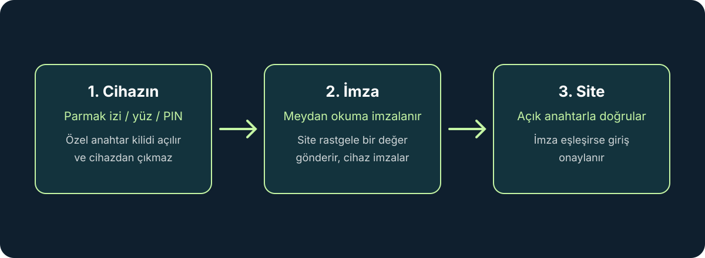

Passkey (Türkçe karşılığıyla geçiş anahtarı), bir hesaba şifre yazmadan; parmak izi, yüz tanıma veya cihazın PIN’iyle giriş yapmanızı sağlayan yeni nesil bir kimlik doğrulama yöntemidir. Şifrelerin unutulması, tekrar kullanılması ve oltalama (phishing) sitelerine kaptırılması yıllardır hesap güvenliğinin en zayıf halkası. Passkey, bu sorunların çoğunu kökten çözmek için tasarlandı.
Bu rehberde passkey’in nasıl çalıştığını, şifreden ne farkı olduğunu, sınırlarını ve nasıl kullanmaya başlayabileceğinizi sade bir dille anlatıyoruz. Ayrıntılar sağlayıcıya (Apple, Google, Microsoft, parola yöneticileri) göre değişebilir; menü adları ve adımlar zamanla güncellenebilir.
Passkey nedir?
Passkey, FIDO Alliance’ın standartlaştırdığı ve web tarafında WebAuthn teknolojisine dayanan bir giriş yöntemidir. Şifre gibi “bildiğiniz bir şey” yerine, cihazınızda saklanan kriptografik bir anahtar çiftini kullanır. Siz yalnızca cihazın kilidini açtığınızı kanıtlarsınız; bunu parmak izi, yüz tanıma, ekran kilidi PIN’i veya desen ile yaparsınız.
Gündelik kullanımda bu şöyle görünür: bir siteye girerken “Passkey ile giriş yap” seçeneğine dokunursunuz, telefon veya bilgisayar kimliğinizi biyometrik olarak doğrular ve oturum açılır. Yazılacak bir şifre, bekleyecek bir SMS kodu yoktur.
Arka planda nasıl çalışıyor?
Passkey oluştururken cihazınız birbiriyle eşleşen iki anahtar üretir: açık anahtar ve özel anahtar. Açık anahtar, giriş yaptığınız site veya uygulamanın sunucusuna kaydedilir. Özel anahtar ise cihazınızda kalır ve kimseyle paylaşılmaz.
- Kayıt: Siteye passkey eklediğinizde cihaz anahtar çiftini üretir, açık anahtarı siteye gönderir.
- Giriş: Site cihazınıza rastgele bir “meydan okuma” (challenge) gönderir. Cihaz, biyometrik doğrulamanızdan sonra bunu özel anahtarla imzalar.
- Doğrulama: Site, imzayı elindeki açık anahtarla kontrol eder. Uyuşuyorsa giriş onaylanır.
Önemli nokta şu: parmak izi veya yüz verisi siteye gönderilmez. Biyometri yalnızca cihazın özel anahtarı kullanmasına izin veren yerel bir kilit görevi görür.
Şifreden farkı ne?
Şifrenin temel sorunu, aynı sırrın hem sizde hem sunucuda bulunması ve girişte sizin onu bir yere yazmanızdır. Sahte bir siteye yazdığınızda sır çalınır; sunucu sızdırıldığında şifre özetleri ele geçirilebilir; aynı şifreyi başka hesapta kullandıysanız etki zincirleme büyür.
- Oltalamaya dayanıklıdır: Passkey, oluşturulduğu alan adına bağlıdır. Sahte bir sitede, adresi farklı olduğu için çalışmaz; yanlış siteye “kandırılarak” girmeniz çok zorlaşır.
- Sunucu sızıntısı ciddi bir risk oluşturmaz: Sunucuda yalnızca açık anahtar bulunur. Tek başına giriş yapmaya yaramaz.
- Tekrar kullanım yoktur: Her site için ayrı bir anahtar çifti üretilir.
- Hatırlanacak bir şey yoktur: Şifre belirleme, karmaşıklık kuralları ve sıfırlama e-postaları ortadan kalkar.

Telefon veya bilgisayarı değiştirirsem ne olur?
En sık sorulan soru bu. Passkey’ler iki şekilde saklanabilir:
- Senkronize passkey: Apple’ın iCloud Anahtar Zinciri, Google Parola Yöneticisi, Microsoft hesabı veya bazı parola yöneticileri passkey’leri bulut hesabınız üzerinden şifreli biçimde eşitleyebilir. Yeni cihaza hesabınızla girdiğinizde passkey’ler de gelir.
- Cihaza bağlı passkey: Bazı donanım güvenlik anahtarlarında olduğu gibi anahtar tek bir cihazdan çıkmaz. Daha yüksek güvenlik sunar, fakat cihaz kaybında yedek bir giriş yöntemi gerekir.
Pratikte çoğu kullanıcı için senkronize passkey yeterlidir. Sağlayıcı hesabınızı (Apple Kimliği, Google hesabı vb.) güçlü bir parola ve iki adımlı doğrulamayla korumak, passkey güvenliğinin de bir parçasıdır.
Başka bir cihazdan nasıl giriş yaparım?
Kendi cihazınız olmayan bir bilgisayarda oturum açmanız gerekirse, tarayıcılar “başka bir cihazdaki passkey’i kullan” seçeneği sunar. Ekranda bir QR kod görünür, telefonunuzla okutursunuz, telefon yakınlık doğrulaması yapar ve biyometrik onayınızı ister. Giriş telefonunuzdan onaylanır; anahtar yabancı bilgisayara kopyalanmaz.
Passkey’i kullanmaya nasıl başlanır?
- Önce hesabınızı güçlendirin: Telefon, Apple Kimliği, Google hesabı veya Microsoft hesabınızda ekran kilidini ve iki adımlı doğrulamayı açın.
- Önemli hesaplarla başlayın: E-posta, bulut depolama, alışveriş ve bankacılık gibi hesapların güvenlik ayarlarında “Passkey ekle” veya “Geçiş anahtarı oluştur” seçeneğini arayın. Google, Microsoft, Apple, PayPal, GitHub gibi birçok büyük hizmet bunu destekliyor; destek hizmete göre değişir.
- Kayıt yerini kontrol edin: Tarayıcı veya telefon passkey’i nereye kaydedeceğinizi sorabilir. Günlük kullandığınız ekosistemi veya parola yöneticinizi seçin.
- Şifreyi hemen silmeyin: Passkey’in çalıştığını farklı bir cihazda da deneyin. Ardından hizmet izin veriyorsa eski şifreyi uzun, benzersiz bir değerle değiştirin ve yedek kurtarma yöntemlerini güncel tutun.
Sınırlar ve dikkat edilecekler
- Her yerde yok: Passkey desteği hızla yayılıyor, ancak her site ve uygulama sunmuyor. Bir süre şifre ve passkey birlikte kullanılacak.
- Ekosistem uyumu: Farklı platformlar arasında geçişte (örneğin iPhone’dan Windows’a) sorun yaşayabilirsiniz. Platformdan bağımsız bir parola yöneticisi bu konuda kolaylık sağlayabilir.
- Kurtarma planı şart: Cihazı kaybedip bulut hesabına da erişemezseniz geri dönüş zorlaşır. Kurtarma kodlarını ve hesap kurtarma yöntemlerini güvenli bir yerde saklayın.
- Ortak cihazlarda dikkatli olun: Başkasının bilgisayarında passkey’i oraya kaydetmek yerine QR koduyla telefonunuzdan onay vermeyi tercih edin.
- Hiçbir yöntem mutlak değil: Passkey, oltalama ve şifre sızıntısı risklerini ciddi ölçüde azaltır; ancak cihazınıza kötü amaçlı yazılım bulaşması veya hesap kurtarma sürecinin kötüye kullanılması gibi riskler tamamen ortadan kalkmaz.
Parola yöneticisi hâlâ gerekli mi?
Evet, en azından geçiş döneminde. Passkey desteklemeyen hesaplar için benzersiz şifreler hâlâ gerekiyor. Birçok parola yöneticisi artık passkey’leri de saklıyor; böylece şifreler ve passkey’ler tek yerde, platformlar arasında yönetilebiliyor. Seçenekleri karşılaştırmak için en iyi parola yöneticileri rehberimize göz atabilirsiniz.
Sık sorulan sorular
- Passkey ile şifre aynı şey mi? Hayır. Şifre paylaşılan bir sırdır; passkey ise cihazda kalan özel anahtar ve sunucudaki açık anahtardan oluşan bir çifttir.
- Parmak izim sitelere gönderiliyor mu? Hayır. Biyometri yalnızca cihazınızda, anahtarın kilidini açmak için kullanılır.
- Telefonum çalınırsa hesabıma girilir mi? Cihazın kilidini aşmak gerekir. Yine de telefonunuzda güçlü bir ekran kilidi kullanın, kaybolursa uzaktan kilitleme ve silme özelliklerini kullanın.
- Passkey ücretli mi? Hayır. Büyük platformlar ve çoğu hizmet passkey’i ek ücret almadan sunuyor.
- Şifremi tamamen silebilir miyim? Hizmet izin veriyorsa mümkün, ancak önce passkey’in birden fazla cihazda çalıştığını ve kurtarma yönteminizin hazır olduğunu doğrulayın.
Sonuç
Passkey, şifreyi hem daha güvenli hem daha kolay hale getirmeyi vaat eden ve gerçekten bu işi başaran nadir güvenlik yeniliklerinden biri. Oltalamaya dayanıklılığı ve sunucu sızıntılarına karşı sağladığı koruma, onu özellikle e-posta, bulut ve finans hesapları için cazip kılıyor. Tek seferde her şeyi değiştirmeniz gerekmiyor: en önemli hesaplarla başlayıp güvenlik ayarlarınızı ve kurtarma yöntemlerinizi güncel tutmanız yeterli.
Kaynaklar
Son kontrol: 30 Ekim 2026. Passkey desteği ve menü adımları hizmet ve platforma göre değişebilir; ayrıntılar için ilgili hizmetin güncel yardım sayfasına bakın. İçerik genel bilgilendirme amaçlıdır.